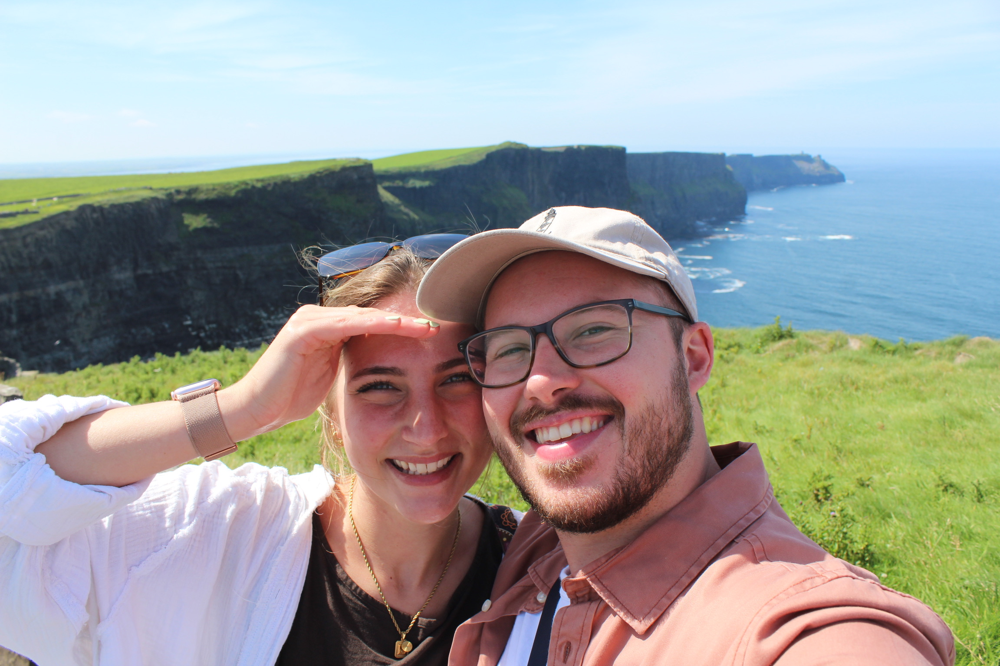

Together with their families,
Elizabeth Rader & Ryan McCune
Joyfully invite you to share in their autumn marriage celebration in Central Pennsylvania.
Saturday, October 23, 2027
York, Pennsylvania
Elizabeth Rader
Ryan McCune

"Omnia vincit amor, et nos cedamus amori."
The Wedding Party
Avery Rader
Sean O'Neill
Sierra Smith
BridesmaidStefanie Cravens
BridesmaidAngie Poulos
BridesmaidGeoffrey Bonnanzio
GroomsmanGriffin Warntz
GroomsmanEvan Eisenhart
GroomsmanVenues & Schedule
Our ceremony and reception will take place in York, Pennsylvania. Exact timing and shuttle details will be posted here as we get closer to October 2027. Our hotel room block is open now, with details below.
Yorktowne Farms
Beneath the Weeping Willow
411 Mundis Mill Road
York, PA 17406
The Yorktowne Hotel
Historic Downtown York • Tapestry Collection by Hilton
48 E. Market Street
York, PA 17401
Parking: Use 41 E. Market St. for garage entry & check-in drop-off.
Our Hotel Room Block
The Yorktowne Hotel • Steps from the reception
Fri, Oct 22 & Sat, Oct 23
Check out Sunday, October 24
September 22, 2027
Unbooked rooms are released after this date
RMWC
For booking by phone
Our group rate is applied automatically, and you'll see room options and pricing before you confirm.
Book Your RoomLet them know you're with the Rader & McCune wedding, or give group code RMWC.
717-848-1111Gift Registry
Your presence at our celebration in York is the greatest gift of all. Registry details will be shared closer to our wedding date.